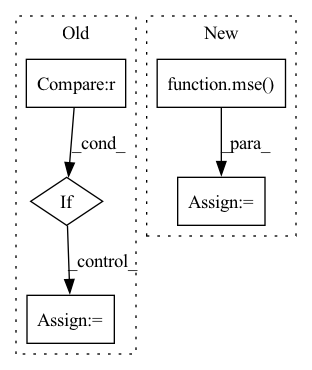

Pattern ID :27473
Before Change
if mask is None:
return 1. - torch.square(y_hat - y).sum() / (torch.square(y.mean(dim=0) - y).sum())
else:
if mask.dtype != torch.bool :
mask = mask.to(torch.bool)
return 1. - torch.square(y_hat[mask] - y[mask]).sum() / (torch.square(y[mask].mean(dim=0) - y[mask]).sum())
After Change
mean_axis = tuple(range(y.dim()))
mean_val = torch.mean(y, dim=mean_axis, keepdims=True)
variance = mse( mean_val, y, mask, reduction, nan_to_zero)
return 1. - (mse_ / variance)
def mre(y_hat: torch.Tensor, y: torch.Tensor, mask: Optional[torch.Tensor] = None) -> float:In pattern: SUPERPATTERN
Frequency: 3
Non-data size: 5
Instances Fragment ID: 81580392
Project Name: torchspatiotemporal/tsl
Commit Name: 4ab8a82b585611b1fb1662b5274beb705c89e907
Time: 2022-11-17
Author: stefano.imoscopi@usi.ch
File Name: tsl/metrics/torch/functional.py
M Class Name: AnonimousClass
N Class Name: AnonimousClass
M Method Name: r2(6)
N Method Name: r2(3)
M Parent Class:
N Parent Class:
M File Name: tsl/metrics/torch/functional.py
N File Name: tsl/metrics/torch/functional.py
M Start Line: 283
M End Line: 311
N Start Line: 282
N End Line: 324
Before Change
"start_frames": batch["start_frame"]}
def validation_end(self, outputs):
if "val_loss" in outputs[0].keys() :
avg_loss = torch.stack([x["val_loss"] for x in outputs]).mean()
avg_loss_v = torch.stack([x["val_loss_v"] for x in outputs]).mean()
avg_loss_a = torch.stack([x["val_loss_a"] for x in outputs]).mean()
avg_ccc_v = np.stack([x["val_ccc_v"] for x in outputs]).mean()After Change
all_ccc_v = concordance_cc2(all_v_gt, all_v_pred)
all_ccc_a = concordance_cc2(all_a_gt, all_a_pred)
all_mse_v = mse( all_v_pred, all_v_gt)
all_mse_a = mse(all_a_pred, all_a_gt)
return {
"progress_bar": { Fragment ID: 81580394
Project Name: sailordiary/m3f.pytorch
Commit Name: a50251b52271f128639e20196f938489df8e09c0
Time: 2020-01-29
Author: me@sailorzhang.com
File Name: models/model.py
M Class Name: AffWild2VA
N Class Name: AffWild2VA
M Method Name: validation_end(2)
N Method Name: validation_end(2)
M Parent Class: pl.LightningModule
N Parent Class: pl.LightningModule
M File Name: models/model.py
N File Name: models/model.py
M Start Line: 77
M End Line: 90
N Start Line: 70
N End Line: 91
Before Change
Returns:
float: The :math:`R^2`.
if mask is None :
mask = slice(None)
else:
mask = np.asarray(mask, dtype=bool)
return 1. - np.square(y_hat[mask] - y[mask]).sum() / (np.square(y[mask].mean(axis=0) - y[mask]).sum())
After Change
mse_ = mse(y_hat, y, mask, reduction, nan_to_zero)
mean_val = np.mean(y, axis=mean_axis, keepdims=True)
variance = mse( mean_val, y, mask, reduction, nan_to_zero)
return 1. - (mse_ / variance)
def mre(y_hat: FrameArray, y: FrameArray, mask: Optional[FrameArray] = None) -> float: Fragment ID: 81580391
Project Name: torchspatiotemporal/tsl
Commit Name: 4ab8a82b585611b1fb1662b5274beb705c89e907
Time: 2022-11-17
Author: stefano.imoscopi@usi.ch
File Name: tsl/metrics/numpy/functional.py
M Class Name: AnonimousClass
N Class Name: AnonimousClass
M Method Name: r2(6)
N Method Name: r2(3)
M Parent Class:
N Parent Class:
M File Name: tsl/metrics/numpy/functional.py
N File Name: tsl/metrics/numpy/functional.py
M Start Line: 279
M End Line: 303
N Start Line: 278
N End Line: 315